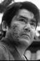

Also known as:座頭市血煙り街道 (original title)
Country:Japan, 87 minutes
Spoken languages:Japanese
Genres:Adventure, Action, Drama
Director(s):Kenji Misumi
Writer(s):Ryōzō Kasahara
Video Codec:Unknown
Number: 2823


Certification:
Storyline:
Ichi is staying at an inn when a woman dies. Her dying wish is that Ichi take her son to his father, an artist living in a nearby town. After arriving in the town, Ichi finds out that the father has been forced by a local boss to create illegal pornography to pay off his gambling debts. Ichi makes it his mission to save tha man and reunite the family, even though it brings him into conflict with a samurai he sort of befriended on his way to the town.
Cast: 


Medium: Bluray,
Comments: Part of: Zatoichi - The Blind Swordsman collection
Loaned: No
Aspect ratio: Unknown